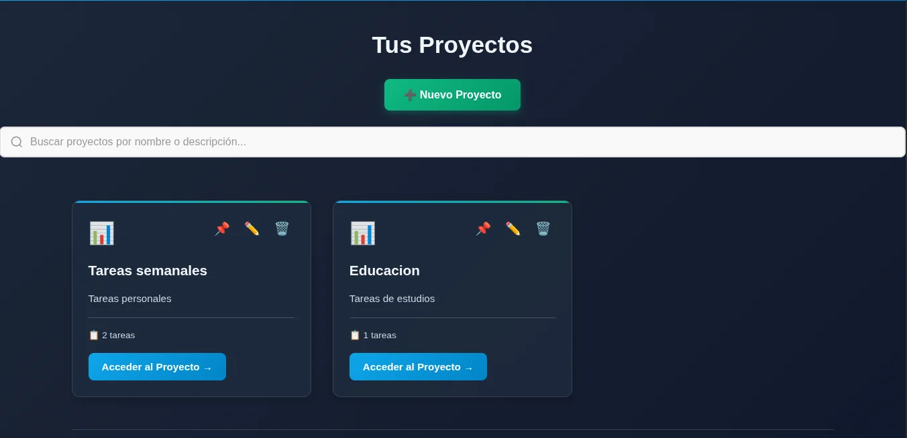
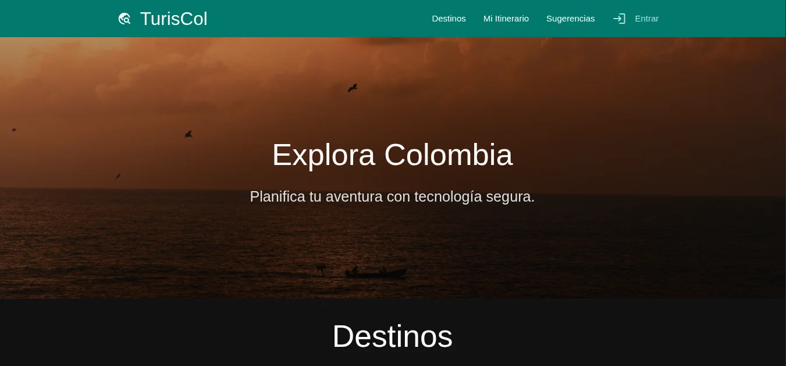

Desarrollador de Software · Químico
Profesional en formación en desarrollo de software con enfoque autodidacta. Mi interés por la programación surgió durante mi experiencia en química computacional, donde desarrollé scripts en Python para automatizar el análisis de datos y optimizar procesos. Actualmente curso un técnico en programación de software y he creado aplicaciones web full-stack como proyectos personales, integrando backend, frontend y bases de datos. Busco mi primera experiencia profesional como desarrollador para seguir creciendo en el área y aportar soluciones eficientes.
Formación técnica en desarrollo de software con énfasis en análisis, diseño, implementación y mantenimiento de sistemas informáticos. Metodología práctica basada en proyectos.
Profesional en Química con formación en química computacional, análisis de datos científicos y metodologías de investigación. Tesis enfocada en simulación molecular y procesamiento automatizado de resultados.

Aplicación web full-stack para gestión de tareas con tablero estilo Kanban. Incluye autenticación JWT, CRUD de proyectos y tareas, filtros y búsqueda, arrastrar y soltar, carga de imágenes, recuperación de contraseña y despliegue en la nube.

Aplicación web full-stack para planificación de viajes turísticos en Colombia. Permite explorar destinos por departamento, crear itinerarios personalizados, gestionar reservas, enviar sugerencias y administrar contenido con roles de usuario y administrador.
Como estudiante investigador desarrollé scripts en Python para automatizar el análisis de datos computacionales, procesamiento de resultados y visualización de propiedades moleculares. Esta experiencia inicial me permitió desarrollar habilidades de lógica de programación, resolución de problemas y manejo de datos, sentando las bases para mi transición al desarrollo de software.
Teléfono: 300 220 9270